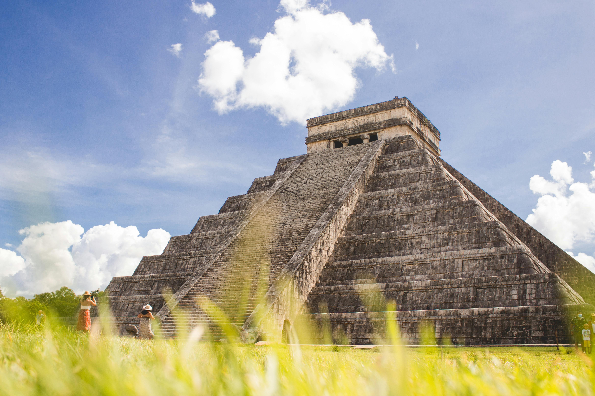
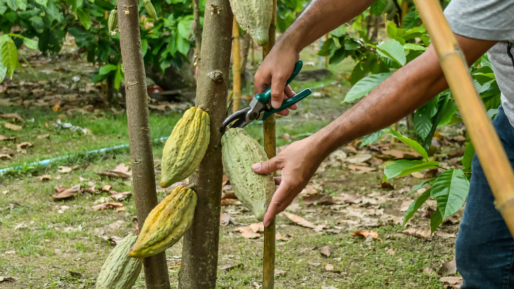
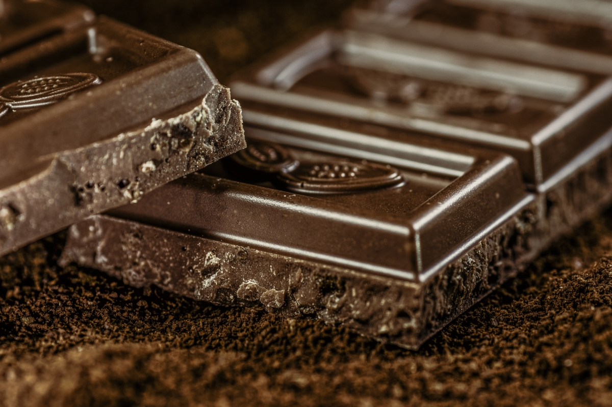

Welcome to Cocoa Corner!
History
The history of cocoa is a fascinating journey that spans thousands of years and encompasses diverse cultures and civilizations. Originating in the ancient civilizations of Mesoamerica, cocoa has played a significant role in the traditions and rituals of indigenous peoples such as the Maya and Aztec. Revered as a sacred gift from the gods, cocoa was consumed as a frothy, bitter beverage prized for its invigorating and spiritual qualities. It wasn't until the arrival of European explorers in the 16th century that cocoa began its global journey. Initially introduced to Europe as a luxury commodity enjoyed by royalty and aristocracy, cocoa gradually gained popularity across the continent, leading to the emergence of the chocolate industry as we know it today. From its humble beginnings in the rainforests of Central and South America to its transformation into a beloved treat enjoyed by people worldwide, the history of cocoa is a testament to its enduring appeal and cultural significance.
Harvesting
Cocoa is harvested primarily in tropical regions within a narrow band around the equator, known as the "cocoa belt." The main cocoa-producing countries include Ivory Coast, Ghana, Indonesia, Nigeria, and Ecuador, among others. The process of cocoa harvesting begins when ripe cocoa pods, which grow directly from the trunk and branches of cocoa trees, are carefully handpicked by farmers. These pods, typically football-shaped and varying in color from green to yellow or red, contain cocoa beans surrounded by a sweet, mucilaginous pulp. After harvesting, the pods are opened using machetes or other tools, and the cocoa beans are extracted. The beans are then fermented, usually in wooden boxes or heaps covered with banana leaves, to develop their characteristic flavor. Following fermentation, the beans are dried in the sun on mats or trays, turning regularly to ensure even drying. Once dried, the cocoa beans are sorted, graded, and packed for transport to chocolate factories around the world, where they will be roasted, ground, and processed to create various cocoa products. The harvesting of cocoa is not only a labor-intensive process but also one deeply rooted in the traditions and livelihoods of cocoa-producing communities, where generations of farmers have cultivated and nurtured this precious crop. Click the image on the right to learn more about cocoa beans.
Uses
Cocoa boasts a versatile array of uses that extend far beyond its traditional role in chocolate production. Beyond being the primary ingredient in chocolate bars, cocoa is utilized in a diverse range of culinary creations, confections, and beverages. From rich and indulgent desserts like chocolate cakes, cookies, and brownies to savory dishes such as mole sauce, cocoa adds depth, complexity, and a hint of bitterness to recipes. Its powdered form is a staple in baking, where it imparts a deep chocolate flavor and enhances the texture of baked goods. Cocoa butter, extracted from cocoa beans during processing, finds applications in skincare and cosmetics due to its moisturizing and emollient properties. Additionally, cocoa is celebrated in hot beverages like hot chocolate and mochas, providing comfort and indulgence on chilly days. Its antioxidant-rich properties have also led to the emergence of cocoa as a superfood, with cocoa powder and dark chocolate hailed for their potential health benefits when consumed in moderation. From culinary delights to skincare essentials, cocoa continues to captivate and inspire across a spectrum of industries and applications.